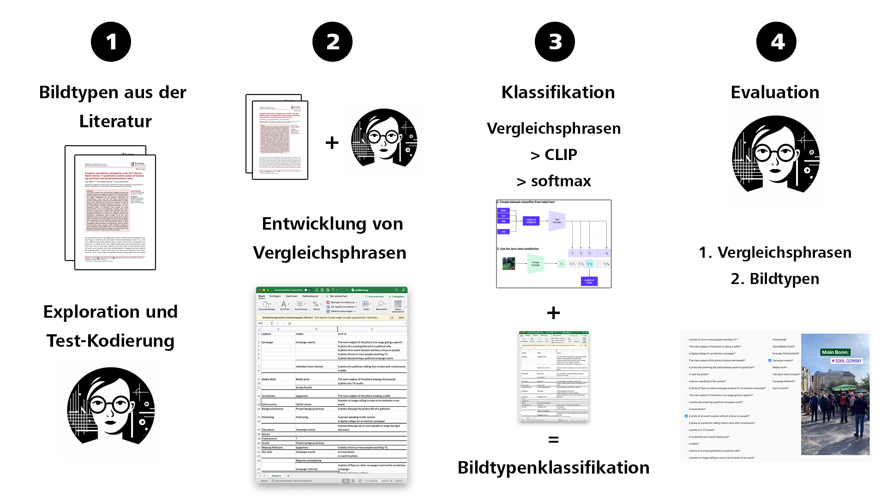

classification_dict = {
"Collages": [
"A screenshot with multiple visual elements such as text, graphics, and images combined.",
],
"Campaign Material": [
"An image primarily showcasing election-related flyers, brochures, or handouts.",
"A distinct promotional poster for a political event or campaign.",
"Visible printed material urging people to vote or join a political cause."
],
"Political Events": [
"An image distinctly capturing the essence of a political campaign event.",
"A location set for a political event, possibly without a crowd.",
"A large assembly of supporters or participants at an open-air political rally.",
"Clear visuals of a venue set for a significant political gathering or convention.",
"Focused visuals of attendees or participants of a political rally or event.",
"Inside ambiance of a political convention or major political conference.",
"Prominent figures or speakers on stage addressing a political audience.",
"A serene image primarily focused on landscapes, travel.",
"Food, beverages, or generic shots."
],
"Individual Contact": [
"A politician genuinely engaging or interacting with individuals or small groups.",
"A close-up or selfie, primarily showcasing an individual, possibly with political affiliations.",
"An informal or candid shot with emphasis on individual engagement, perhaps in a political setting."
],
"Interviews & Media": [
"An indoor setting, well-lit, designed for professional media interviews or broadcasts.",
"Clear visuals of an interviewee in a controlled studio environment.",
"Microphone or recording equipment predominantly in front of a speaker indoors.",
"Behind-the-scenes ambiance of a media setup or broadcast preparation.",
"Visuals from a TV or media broadcast, including distinct channel or media branding.",
"Significant media branding or logos evident, possibly during an interview or panel discussion.",
"Structured indoor setting of a press conference or media event with multiple participants."
],
"Social Media Moderation": [
"Face-centric visual with the individual addressing or connecting with the camera.",
"Emphasis on facial features, minimal background distractions, typical of online profiles.",
"Portrait-style close-up of a face, without discernible logos, graphics, or overlays."
],
}Image classification using CLIP works by comparing a string of text with an image. If we compare multiple text-strings with the same image, we can determine the phrase with the highest similarity score and infer the classification. To make the classification work for my scenario, I created a dictionary, where each image type is mapped to multiple sentences describing how an image in this class would look like.

My implementation is inspired by this medium story.
Using this dictionary, we can now compare the images to the strings using CLIP in a loop.
from tqdm import tqdm
import numpy as np
import pandas as pd
import torch
from PIL import Image
# Assuming preprocess, clip model, and device are already initialized
def classify_images_with_clip(image_files, classification_dict, column_name, BATCH_SIZE=500):
labels_map, flat_labels = flatten_classification_dict(classification_dict)
text = clip.tokenize(flat_labels).to(device)
results = []
for batch_start in tqdm(range(0, len(image_files), BATCH_SIZE)):
batch_end = batch_start + BATCH_SIZE
batch_files = image_files[batch_start:batch_end]
images = preprocess_images(batch_files)
if not images:
continue
image_input = torch.tensor(np.stack(images)).to(device)
logits_per_image = model_inference(image_input, text)
update_results(logits_per_image, batch_files, flat_labels, labels_map, results, column_name)
return pd.DataFrame(results)
def flatten_classification_dict(classification_dict):
labels_map = {}
flat_labels = []
for category, phrases in classification_dict.items():
for phrase in phrases:
flat_labels.append(phrase)
labels_map[phrase] = category
return labels_map, flat_labels
def preprocess_images(image_files):
images = []
for img_file in image_files:
try:
image = preprocess(Image.open(img_file))
images.append(image)
except IOError:
print(f"Error loading image: {img_file}")
return images
def model_inference(image_input, text):
with torch.no_grad():
logits_per_image, _ = model(image_input, text)
return logits_per_image.softmax(dim=-1).cpu().numpy() * 100
def update_results(logits_per_image, batch_files, flat_labels, labels_map, results, column_name):
max_indices = np.argsort(logits_per_image, axis=1)[:, -2:]
for idx, (file, top_indices) in enumerate(zip(batch_files, max_indices)):
result = {"Image": file}
for rank, label_idx in enumerate(top_indices[::-1], 1):
label = flat_labels[label_idx]
category = labels_map[label]
prob = logits_per_image[idx, label_idx].round(2)
result.update({
f"{column_name}_{rank}": category,
f"{column_name}_label_{rank}": label,
f"{column_name}_prob_{rank}": prob
})
results.append(result)
def update_results(logits_per_image, batch_files, flat_labels, labels_map, results, column_name):
max_indices = np.argmax(logits_per_image, axis=1)
for idx, (file, top_index) in enumerate(zip(batch_files, max_indices)):
label = flat_labels[top_index]
category = labels_map[label]
prob = logits_per_image[idx, top_index].round(2) # Fixed probability extraction
result = {
"Image": file,
f"{column_name}": category,
f"{column_name} Label": label,
f"{column_name} Probability": prob
}
results.append(result)
import os
image_files = df['Image'].unique()
# Perform the classification and get the results as a DataFrame
classified_df = classify_images_with_clip(image_files, classification_dict, 'Classification')The classified_df contains the classification results. This implementation just saves the highest probability labels and classifications.
classified_df.head()| Image | Classification | Classification Label | Classification Probability | |
|---|---|---|---|---|
| 0 | /content/media/images/afd.bund/212537388606051... | Political Events | Focused visuals of attendees or participants o... | 26.78125 |
| 1 | /content/media/images/afd.bund/212537470102207... | Interviews & Media | Visuals from a TV or media broadcast, includin... | 71.31250 |
| 2 | /content/media/images/afd.bund/249085122621717... | Social Media Moderation | Emphasis on facial features, minimal backgroun... | 29.21875 |
| 3 | /content/media/images/afd.bund/260084001188499... | Interviews & Media | Clear visuals of an interviewee in a controlle... | 79.62500 |
| 4 | /content/media/images/afd.bund/260085279483160... | Interviews & Media | Clear visuals of an interviewee in a controlle... | 48.00000 |
Qualitative Evaluation Running the last cells in the notebook creates a visual overview of the classification results. n images are sampled and displayed per group. The qualitative evaluation does not replace proper external validation!. Additionally, the overview is saved to {current_date}-CLIP-Classification.html. Download the file and open it in your browser for a better layout. The second validation cell creates a simple interface displaying on image and the classification result. Click on the “Right” or “Wrong” button to browse through multiple images and get a rough feeling of the classification qualities.